Part 5 · five-lock throughput on LS6 · N=4096
PDF · SVG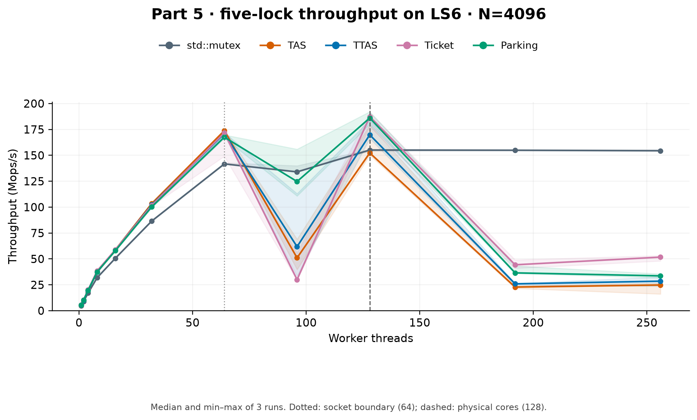
Median and min–max of 3 runs. Dotted: socket boundary (64); dashed: physical cores (128).
Main comparisons: N=4096. Padding: 1024. Earlier N=256 measurements are labeled separately. Bands show observed min–max, not confidence intervals.

Median and min–max of 3 runs. Dotted: socket boundary (64); dashed: physical cores (128).
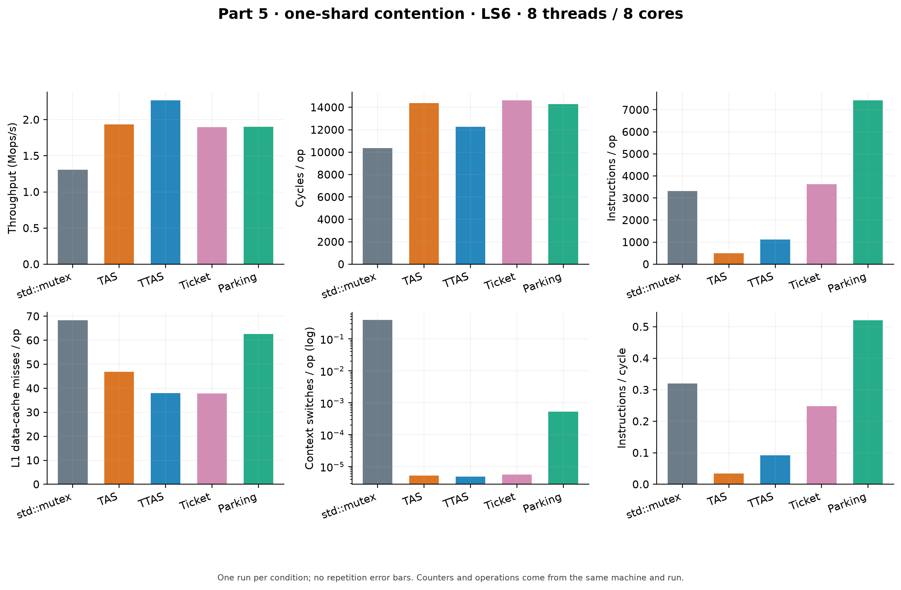
One run per condition; no repetition error bars. Counters and operations come from the same machine and run.
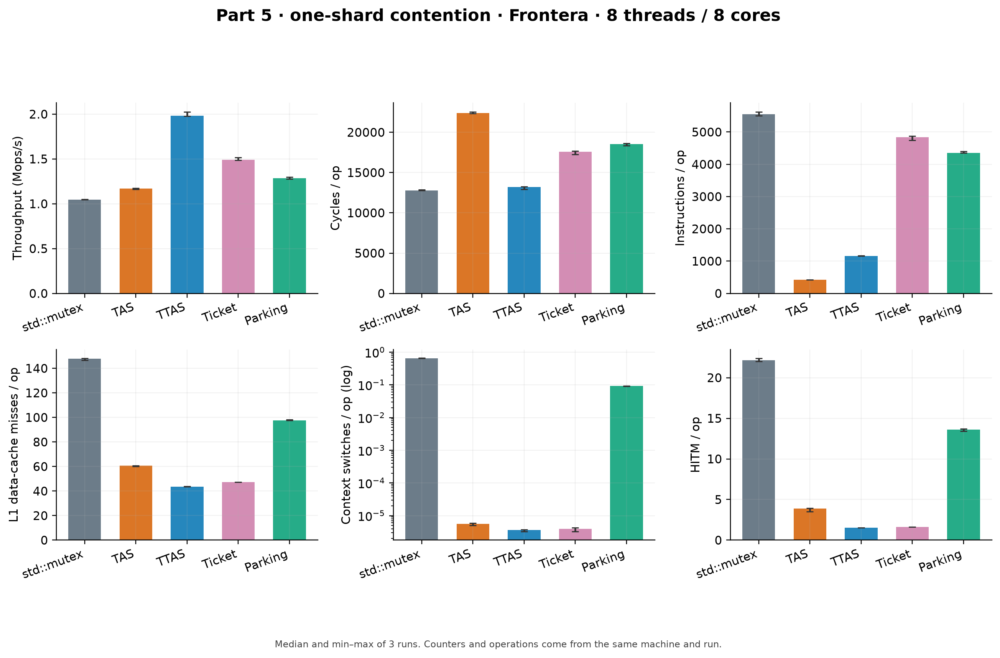
Median and min–max of 3 runs. Counters and operations come from the same machine and run.
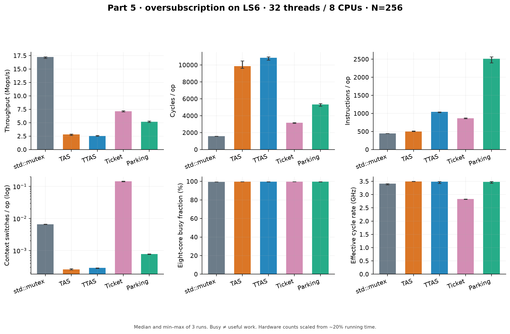
Median and min–max of 3 runs. Busy ≠ useful work. Hardware counts scaled from ~20% running time.
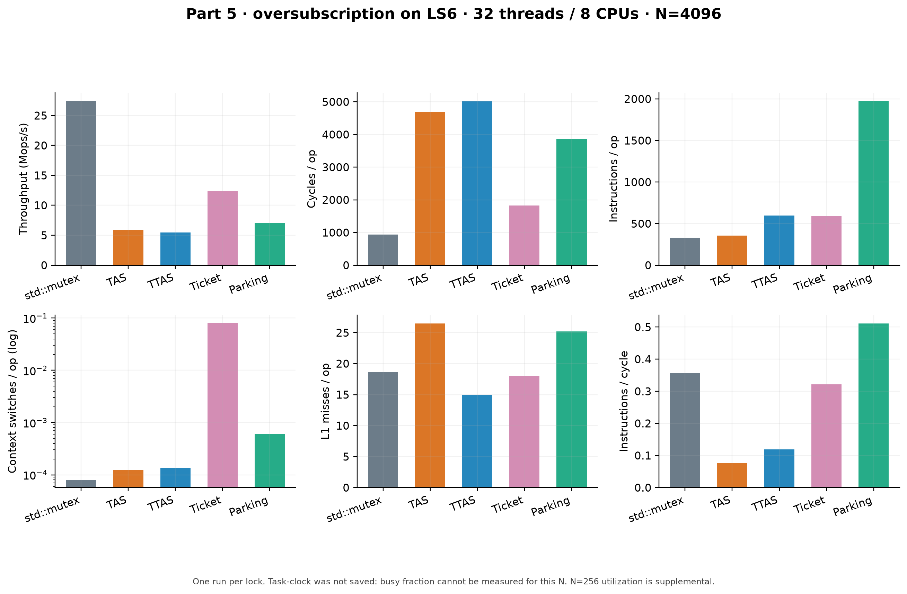
One run per lock. Task-clock was not saved: busy fraction cannot be measured for this N. N=256 utilization is supplemental.
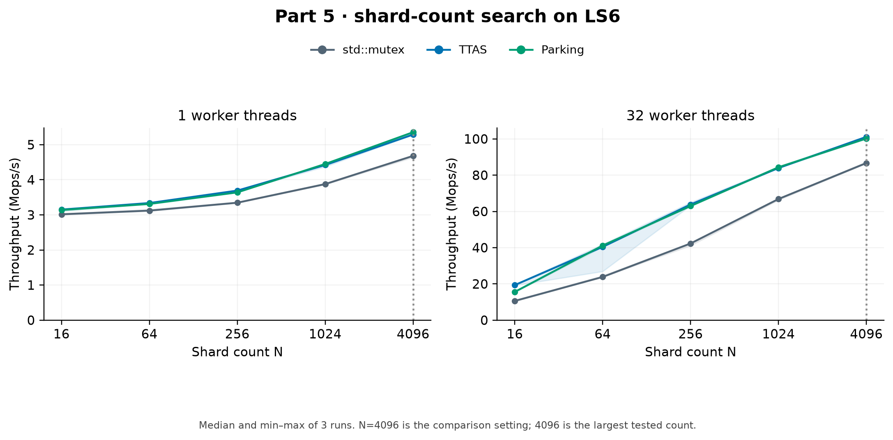
Median and min–max of 3 runs. N=4096 is the comparison setting; 4096 is the largest tested count.
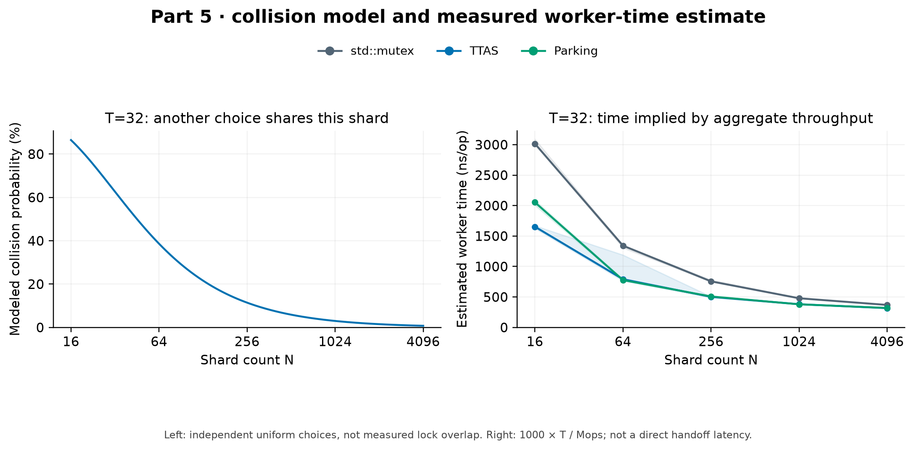
Left: independent uniform choices, not measured lock overlap. Right: 1000 × T / Mops; not a direct handoff latency.
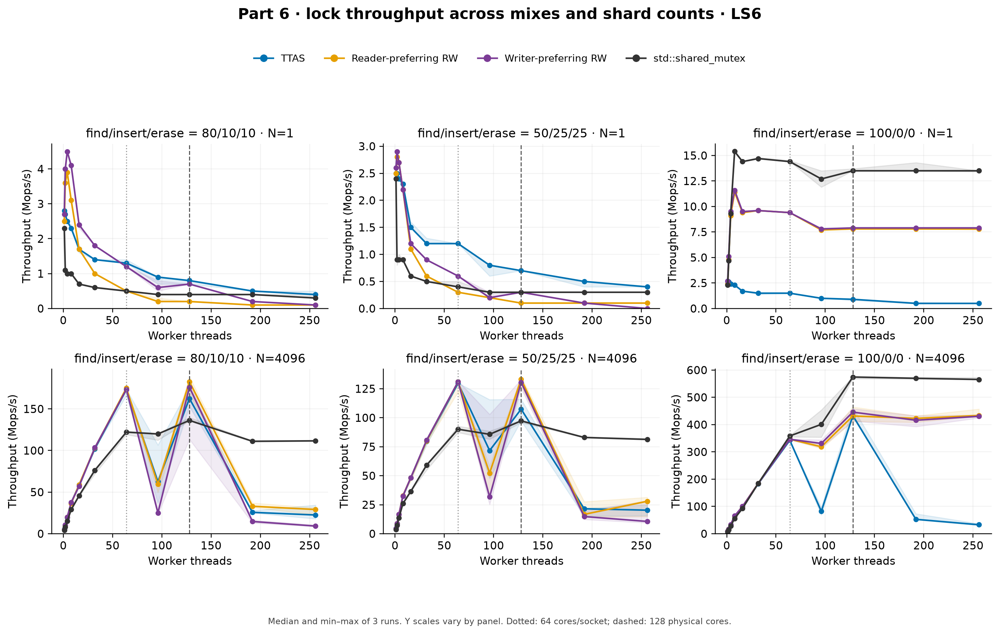
Median and min–max of 3 runs. Y scales vary by panel. Dotted: 64 cores/socket; dashed: 128 physical cores.
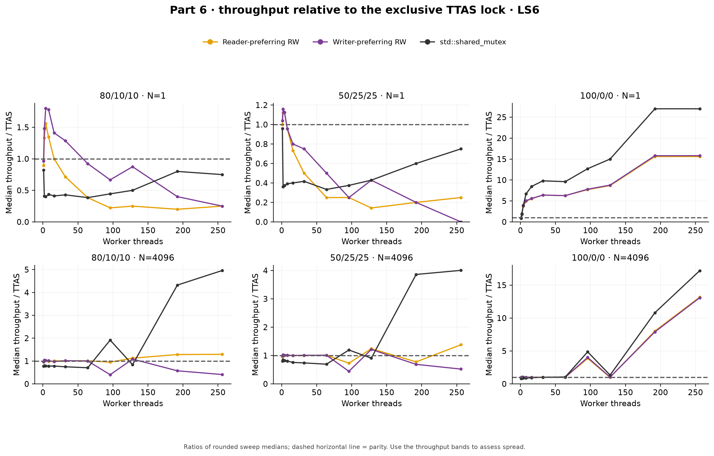
Ratios of rounded sweep medians; dashed horizontal line = parity. Use the throughput bands to assess spread.
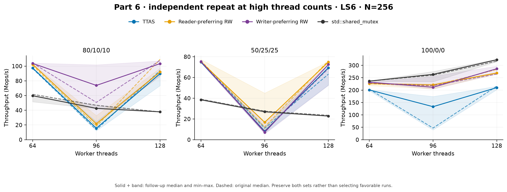
Solid + band: follow-up median and min–max. Dashed: original median. Preserve both sets rather than selecting favorable runs.
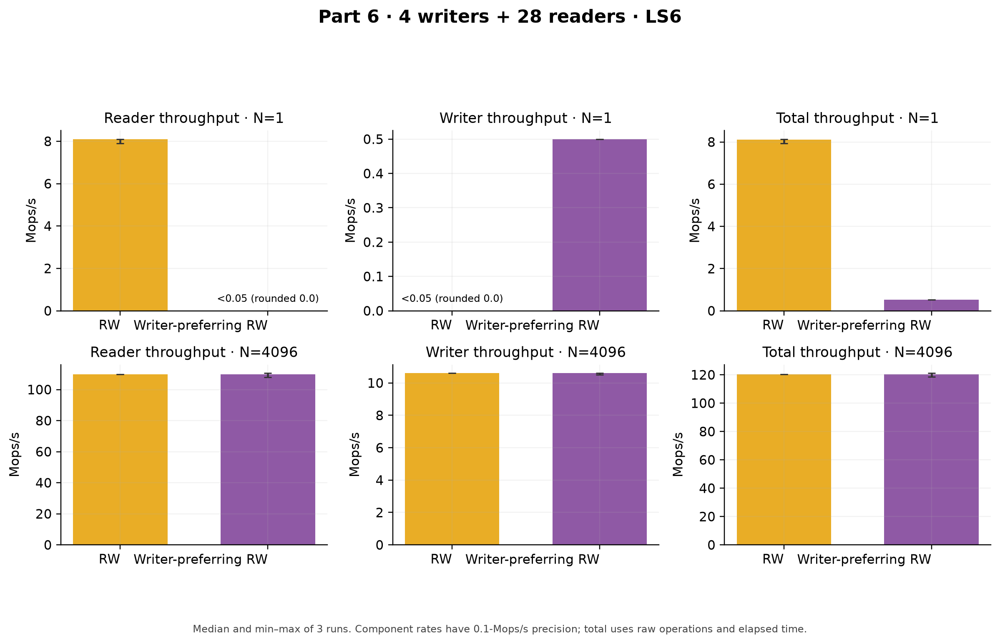
Median and min–max of 3 runs. Component rates have 0.1-Mops/s precision; total uses raw operations and elapsed time.
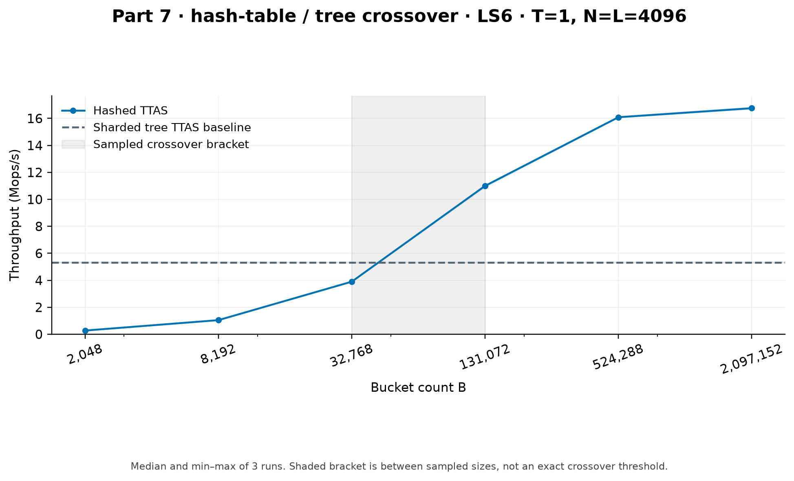
Median and min–max of 3 runs. Shaded bracket is between sampled sizes, not an exact crossover threshold.
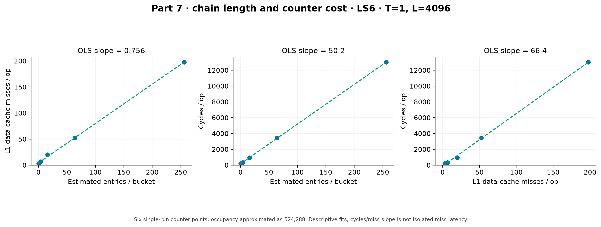
Six single-run counter points; occupancy approximated as 524,288. Descriptive fits; cycles/miss slope is not isolated miss latency.
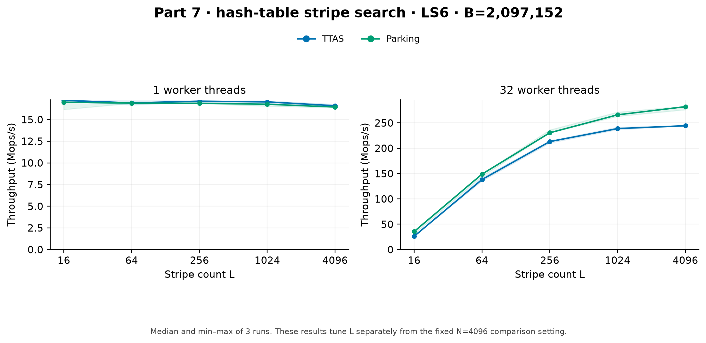
Median and min–max of 3 runs. These results tune L separately from the fixed N=4096 comparison setting.
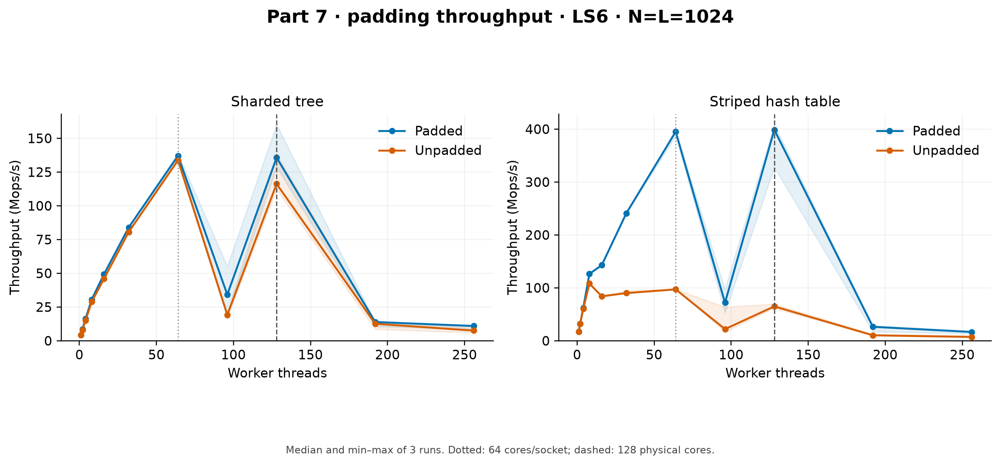
Median and min–max of 3 runs. Dotted: 64 cores/socket; dashed: 128 physical cores.
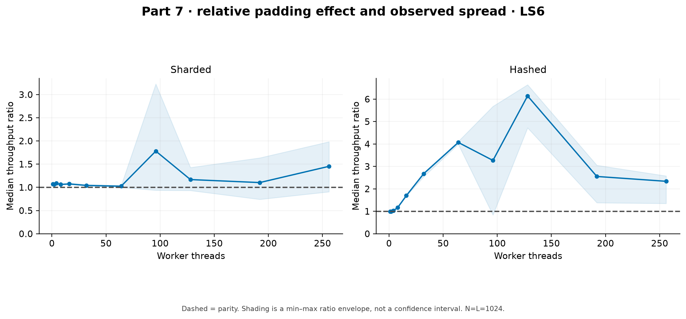
Dashed = parity. Shading is a min–max ratio envelope, not a confidence interval. N=L=1024.
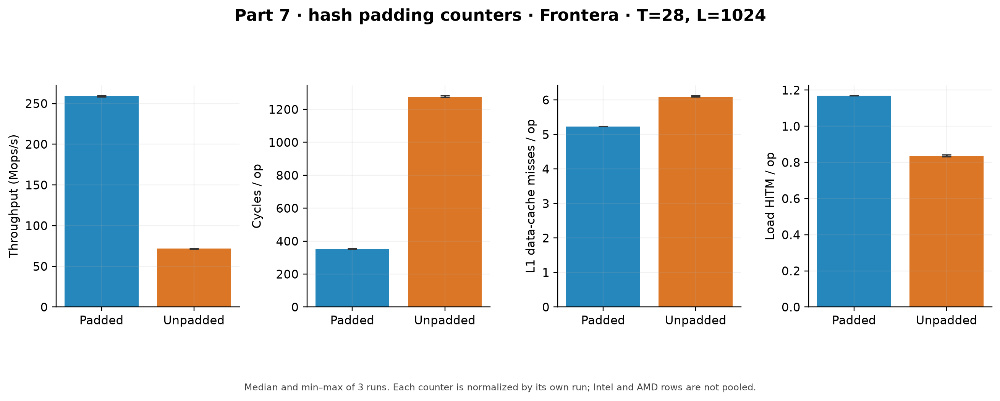
Median and min–max of 3 runs. Each counter is normalized by its own run; Intel and AMD rows are not pooled.
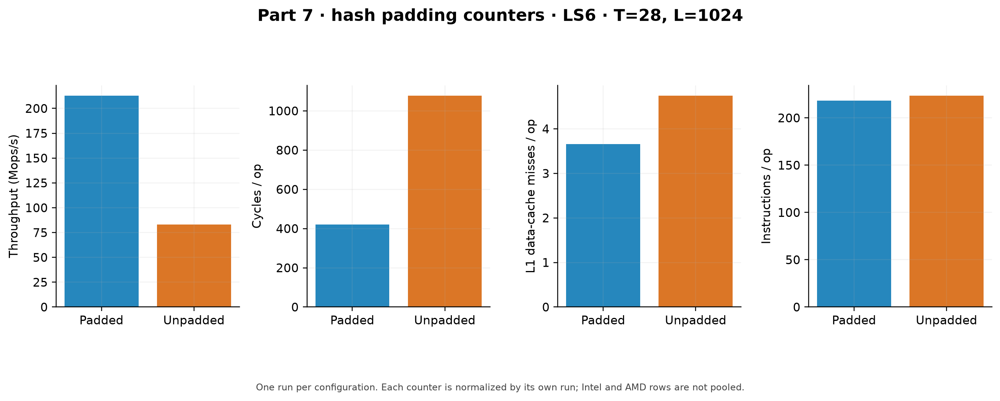
One run per configuration. Each counter is normalized by its own run; Intel and AMD rows are not pooled.